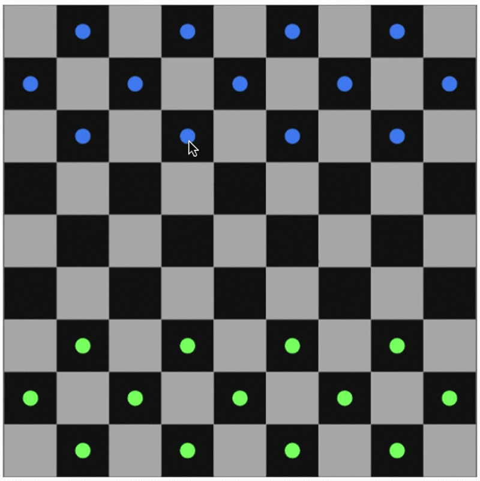

Here we will present the rules of Centipede Army Checkers. They will apply for both Singleplayer and Multiplayer
To select a piece, click on it! You will know if it is selected because it will have a white halo around its outer paremeter. To unselect it, click on it again. You cannot select more than one piece at a time.
To move a piece, select it, and then click on the square that you want to move it to. If you click on a square to move the piece to and nothing happens, it means that the move was not valid. You can only move your non-king pieces forward diagonally. Once you move your piece, it is the other players turn.
To jump over a piece, you need to be certain of two things. Firstly, the piece that you are jumping over must belong to the other team. And secondly, the space where you will land after jumping over the enemy must not be occupied. Once you jump over the enemy players piece, it is now their turn.
In order for a piece to become a king, it must reach the other side of the board. Then, it will be represented with a purple circle around it. At this point, the piece can move diagonally forward or backwards.
When you jump over the last player, a notification will appear indicating that you won. Otherwise if you lose, you will be notified of your loss.
When you play singleplayer, you as the player are in control of the blue pieces. With multiplayer, the first person to connect to the lobby controls the blue pieces. The second will control the green pieces